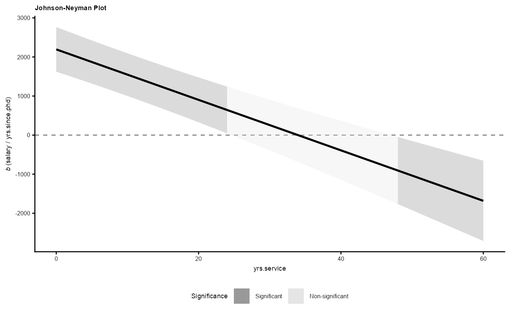

Generate Johnson-Neyman Data
Arguments
- data
A data.frame that is the output of
tidy_es()on aglhtobject.- ci
Confidence interval (0, 1). Default is 0.95.
Value
A data.frame of class c("jn_df", "data.frame") containing:
x: Values of the primary moderator (mapped to the x-axis).group: Values of the secondary moderator, if any.facet: Values of the tertiary moderator, if any.predicted: Simple slope estimate.std.error: Standard error of the slope.df: Degrees of freedom.statistic: t-statistic.p.value: p-value.conf.low: Lower bound of the slope confidence interval.conf.high: Upper bound of the slope confidence interval.sig: Logical indicating whether the slope is significant (p.value < 1 - ci).
See also
Other contrast or COPE helpers:
check_contrast_orthogonality(),
gen_contrast_blank(),
gen_contrast_ss(),
plot.jn_df(),
tidy_es_cope_F(),
tidy_es_cope_t()
Examples
fit1 <- lm(salary ~ yrs.since.phd * yrs.service, data = carData::Salaries)
c1 <- gen_contrast_ss(
fit1,
x = "yrs.since.phd",
m = list(yrs.service = "real")
)
fit_cope1 <- multcomp::glht(fit1, linfct = c1)
df_cope_coef1 <- tidy_es(fit_cope1)
df_cope_jn1 <- gen_data_jn(df_cope_coef1)
plot(df_cope_jn1)
